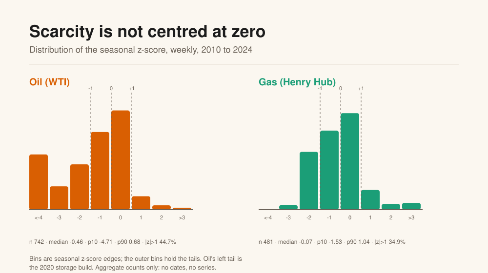
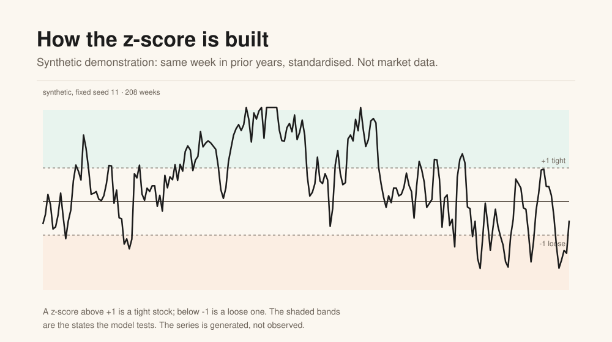

Eight charts, one question.
How physical scarcity shapes the oil and gas curve, what survives a controlled test, and what the model cannot do.
1. The question
When the stock is low relative to the same week in prior years, the nearby barrel should be worth more than the deferred one. The curve should backwardate. Is that true, how strong is it, and can it frame a trade idea without confusing a story with an edge?

2. The shape of the curve
Carry is the annualised three-month slope, 4 × ln(nearby / fourth).
Positive is backwardation, negative is contango. The model measures the slope, not the level.

3. Scarcity moves the curve
Scarcity is a seasonal z-score: this week's inventory against the same ISO week in the prior five years. The coefficient is the change in annualised carry for a one-standard-deviation increase, holding the controls fixed.

The controls are the policy buffer, the short rate, industrial production, the dollar, realised volatility and month dummies.
3b. What scarcity looks like
Scarcity is the state variable. Oil's distribution is not centred: median -0.46, 10th percentile -4.71, and 44.7% of weeks beyond one standard deviation. The left tail is the 2020 storage build. Gas is closer to centred: median -0.07, p10 -1.53, p90 1.04, 34.9% beyond one standard deviation.


4. Gas is the stronger market
Gas fits better: R² 0.739 against 0.140 for oil. Out of sample, the model's error is 28.3% lower than a seasonal naive for oil and 53.2% lower for gas.

5. The state matters, in two ways
Tight storage is a level shift: it raises backwardation by 0.149 in oil (t 5.28) and 0.299 in gas (t 6.15). The post-2020 change is a slope change: 0.023 to 0.125 in oil, 0.167 to 0.413 in gas. The gas difference is the robust one.
6. The weekly build adds little
Once the level is known, the week-on-week build has the right sign and no edge: -0.052 (t -1.04) in oil, -0.100 (t -0.96) in gas. The level matters; the flow is context.
7. One factor, but not one market
The median first-component share is 0.561 against a null of 0.243, rising to 0.667 when gas is excluded. The common factor is liquids. Gas is a second factor.

8. The scorecard
Every rule is written down before it is run. 12 confirmed, 2 no-edge, 1 falsified. The no-edge rules are the weekly build in oil and gas; the falsified rule is the gas convexity term.

9. What it is good at, and what it is not
| Good at | Not good at |
|---|---|
| Explaining the level of carry relative to seasonality | Timing week-to-week changes |
| Ranking oil against gas: gas is stronger | Forecasting the price |
| Telling a liquids move from a gas move | Treating energy as one market |
| Showing when the state changes the slope | Measuring a live carry: the stored curve ends 2024-04-05 |
10. How to use it
The daily loop is a comparison, not a signal service.
Refresh
Note any revision.
Scarcity
Use the prior published stock.
Carry
Measure the slope.
Gap
Compare observed with implied.
Gate
State, factor, catalyst, cost.
If any step is missing, the answer is no idea, which is a valid output.